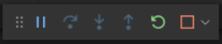

Using Xdebug
for Drupal
Why Xdebug?
die();- kint
kint($data1, $data2, $data3, ...);kint_trace();
{{ dump() }}- Drupal Logger
\Drupal::logger('my_module')->notice($message);\Drupal::logger('my_module')->error($message);
- Drupal Messenger
\Drupal::messenger()->addStatus(t('Successful message.'));\Drupal::messenger()->addWarning(t('Warning message.'));\Drupal::messenger()->addError(t('Error message.'));
Why Xdebug?
What's Xdebug?
PHP extension
(written in C)

How to Debug...
Article: Debugging with vsCode
Breakpoints
Variables

{kind=link}
{kind=link}
{kind=link}
{kind=link}
Module: Twig Xdebug
How to Xdebug Linux
Linux, vsCode & Docksal
(por Ignacio Bonelli)
- Docksal working with vsCode.
- vsCode Xdebug extension
- Quick local env instructions:
Debugger setup in vsCode
How to Xdebug macOS
macOS, phpStorm & Docksal
(por Matías Miranda)
How use debug JS?
vsCode, Chrome & Docksal
(por Matías Vessuri)
- Introducing Chrome Debugging for VS Code
- Debugging in vsCode
- vsCode debugging extensions (NodeJS, Python, etc...)
Funciona para debug de JavaScript en cualquier lado, incluso dentro de Drupal.